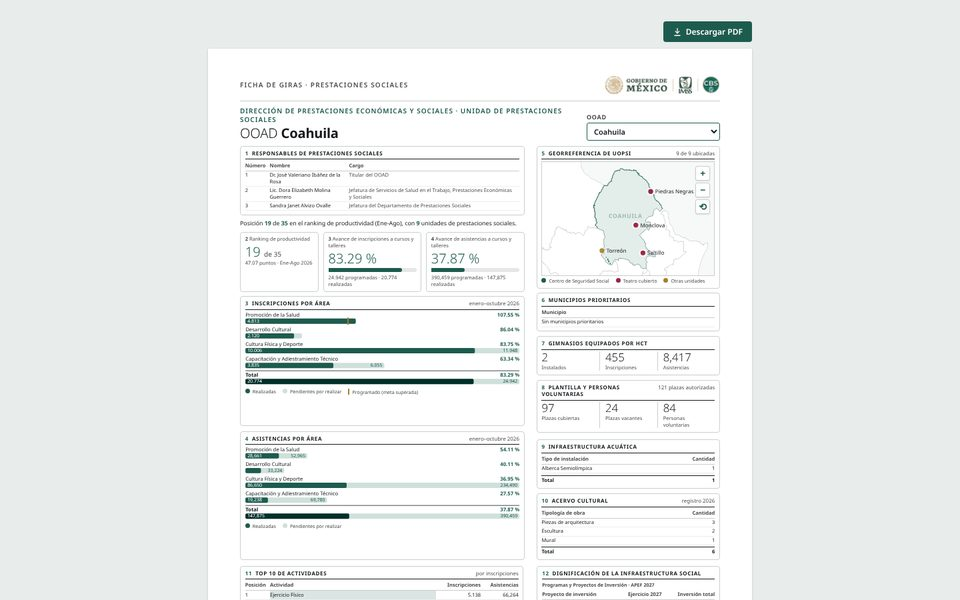

Ficha
Ficha de Giras de Prestaciones Sociales
Ficha por OOAD en dos hojas tamaño carta: responsables, ranking de productividad, avance de inscripciones y asistencias, georreferencia e infraestructura.
Actualizado el 9 de noviembre de 2026